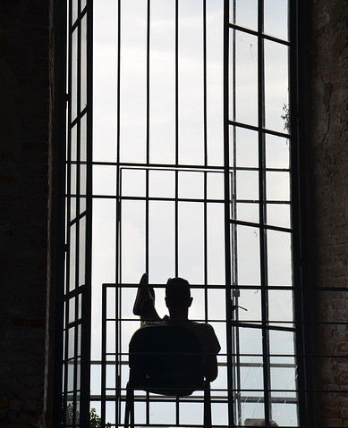
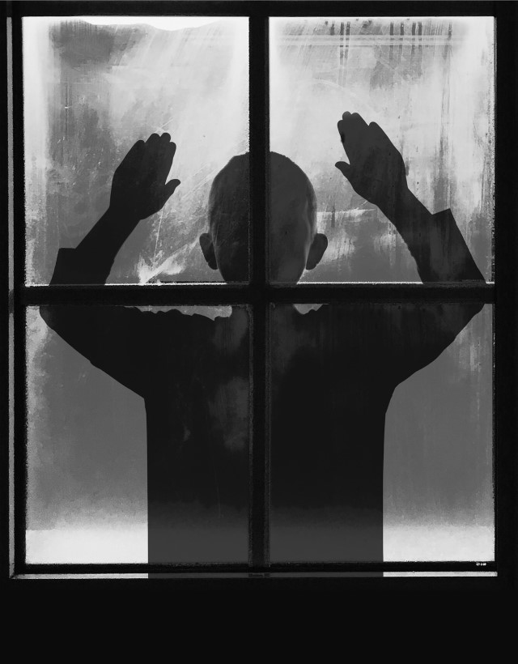

KİM BU NARSİSTLER?
Hikayemiz şöyle başlıyor; Narcissus bir gün suda kendi yansımasını görmüş ve ona aşık olmuş.Saatlerce onu seyredip durmuş.Suyun üzerinde duran, kendisine bakan ama ona karşılık vermeyen bu imge tam da ona sarılacakken birden yok olmuş. Sonunda Narcissus aşkına...
Devamını Oku...

İSTİSMARIN 4 TÜRÜ
Çocuk istismarı; 0-18 yaş aralığındaki bireylerin her türlü gelişimini engelleyerek , beden ve ruh sağlığına zarar veren durumlarla karşı karşıya bırakılması olarak tanımlanabilir. Çocukların yetişkin bireyler olma yolundaki sürecine ciddi hasarlar veren istismarın 4 türü vardır. Bunlar; fiziksel istismar, cinsel istismar...
Fiziksel istismar; en sık rastlanılan istismar tipi olmakla birlikte tespit edilmesi en kolay istismar...
Devamını Oku...